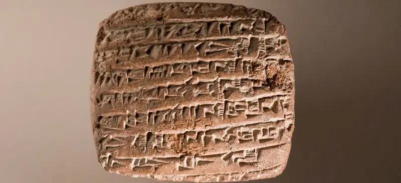
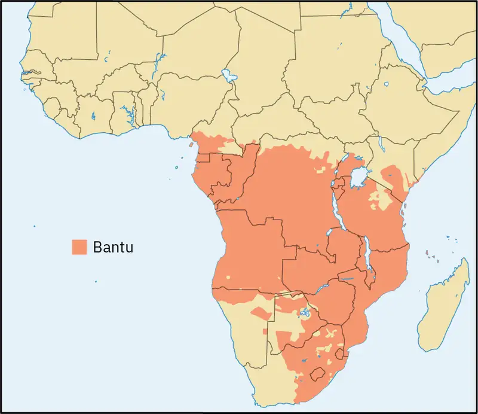
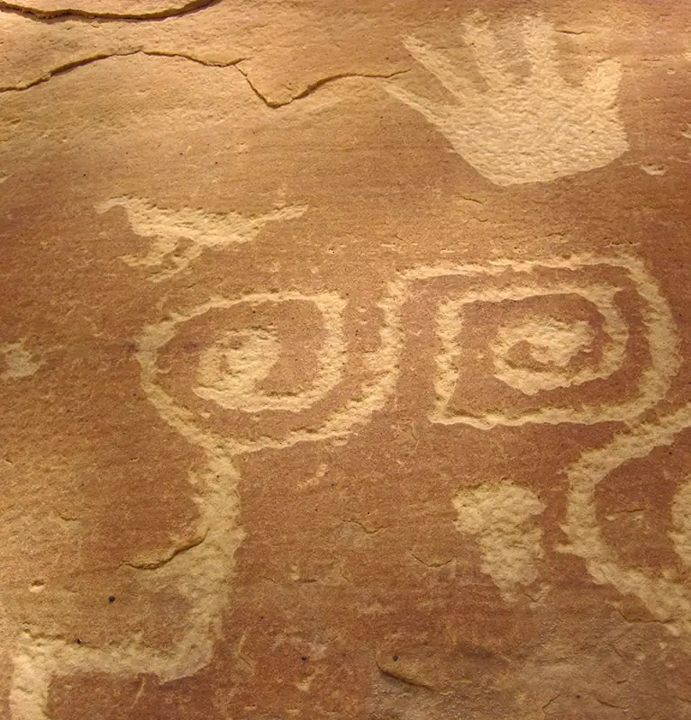
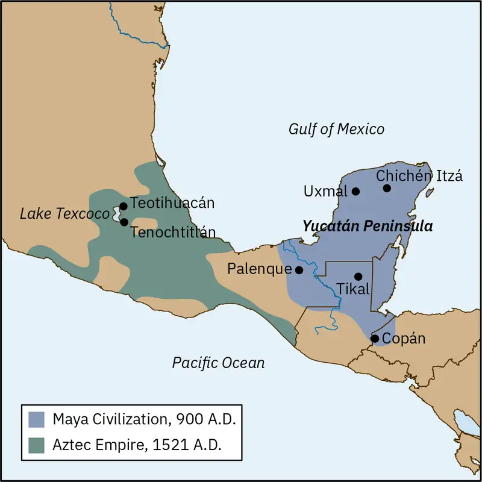
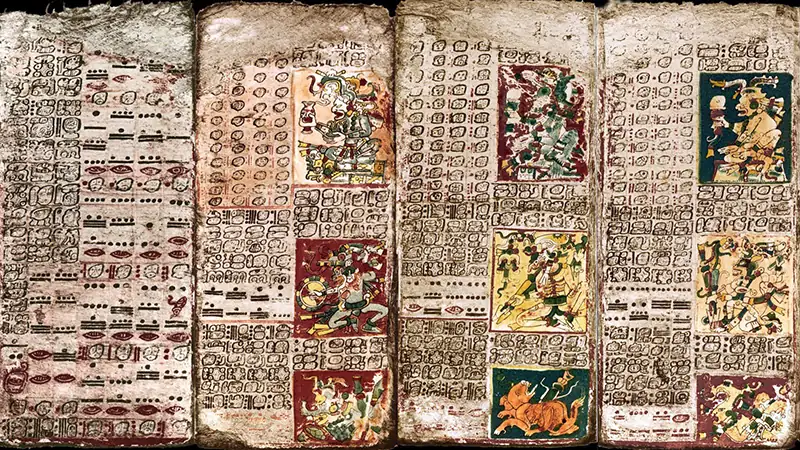
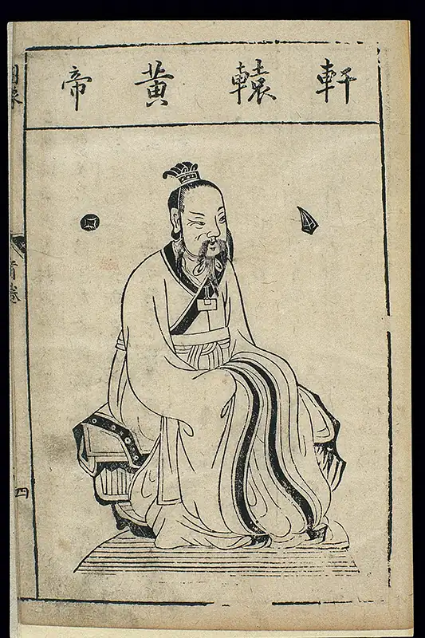

Chapter 3: The Early History of Philosophy around the World¶
Introduction¶

As discussed in previous chapters, the figure of the sage, the individual found in early societies around the world who mediated between the everyday and the transcendent realm, is an important precursor to philosophy. In most societies, this figure predates the recognition of the philosopher as the individual seeker of wisdom by many hundreds, if not thousands, of years. Justin E. H. Smith (2016) argues that philosophical thought requires abstract thinking of the sort required for the bureaucratic administration of society and that many societies developed philosophical traditions out of these practices of abstract reasoning. These traditions furnished shared beliefs about ethics, metaphysics, and other realms of philosophical inquiry.
Homo sapiens have inhabited the earth for at least 250,000 years, originating in the Blue Nile rift region of northern Africa. However, the oldest forms of human writing were discovered in ancient Sumer, in Mesopotamia, between the Tigris and Euphrates Rivers where they enter the Persian Gulf, dating to around 3500 BCE (approximately 5,500 years ago). The vast period of time between the emergence of biological humans and the emergence of human writing is typically called prehistory. This term does not imply that early human beings lacked a sense of their past and the lessons they may draw from it. We know from studying modern aliterate societies that many of them possess oral traditions of storytelling that provide historical perspective. However, whatever perspective prehistoric humans gained from oral history is completely lost to us.
The use of writing to record human thought marks the transition from prehistory to history. The first recorded texts include genealogies, accounts of heroic and everyday actions by human beings, and legal codes. These earliest writings offer a glimpse into early human systems of government and everyday life. Writing expressing philosophical questions came later, primarily in the form of religious and mythological stories, and this is where we begin. There is concrete evidence that at this turning point in human history, people were aware of and concerned with history; engaged in questions of the origins of nature and the self; speculating about the goals and purposes of human life, whether moral or spiritual; and reasoning about right, wrong, justice, and injustice. This turning point is what German intellectual Karl Jaspers (1883–1969) has called the “Axial Period” (1953), more commonly translated as the “Axial Age.” Jaspers observed that this “axis” of the emergence of philosophical thought occurred during a somewhat well-defined period, between 800 BCE and 200 BCE, in multiple locations around the world, principally the Mediterranean region, Mesopotamia, India, and China. Remarkably, human beings in these disparate locations appear to have made roughly simultaneous transitions, first from prehistory to history, and then from a mythological and religious understanding of human beings and their place in the world to a more systematic study of human beings and the world around them. This chapter will cover the period of time from the so-called axial age to the development of rich philosophical traditions in Africa, Asia, and the Americas.
3.1 Indigenous Philosophy¶
Learning Objectives
By the end of this section, you will be able to:
- Identify challenges in the study of Indigenous philosophies.
- Describe metaphysical and epistemological ideas explored by Indigenous African philosophies.
- Describe metaphysical and epistemological ideas explored by Indigenous Native American philosophies.
- Describe metaphysical and epistemological ideas explored by Mesoamerican philosophies.
Some of the best-known ancient texts, connected to many of the great civilizations around the world, are religious or mythological in nature. Examples include the Vedas of India, the earliest literature of China, and the Jewish Torah. These texts introduce aspects of philosophical inquiry—such as questions concerning the origins of the cosmos and the nature and purpose of human life, morality, justice, human excellence, knowledge, and so forth—in terms of stories and explanations that rely on the supernatural. These stories provide context, meaning, and direction for human life within a framework that assumes that the natural world is infused with supernatural importance. Such texts are a testament to the fundamental and binding nature of religion in human societies.
When humans shift from religious answers to questions about purpose and meaning to more naturalistic and logical answers, they move from the realm of myth to the realm of reason. In Greek, this movement is described as a move from mythos to logos, where mythos signifies the supernatural stories people tell, while logos signifies the rational, logical, and scientific stories they tell. This distinction may lead one to believe that there is a clear transition from religious thought to philosophical or scientific thought, but this is not the case. The earliest philosophers in Greece, Rome, India, China, and North Africa all used mythological and analogical (analogy-based) stories to explain their rational systems, while religious texts from the same period often engage in serious, logical argumentation. Rather than seeing a decisive break between mythological thinking and rational thinking, one should understand the transition from mythos to logos as a gradual, uneven, and zig-zagging progression. This progression teaches that there are close connections between religion, philosophy, and science in terms of the desire to understand, explain, and find purpose for human existence.
Challenges in Researching Indigenous Philosophy¶
There is growing interest in Indigenous philosophy in contemporary academic philosophy, as a way of engaging with both the historical and present-day thought of Indigenous peoples around the world. Indigenous philosophy broadly refers to the ideas of Indigenous peoples pertaining to the nature of the world, human existence, ethics, ideal social and political structures, and other topics also considered by traditional academic philosophy. Unlike the philosophies of ancient Greece, India, and China, Indigenous philosophies did not spread across vast territorial empires or feature centers of formal learning that documented and developed philosophical ideas over hundreds or thousands of years. The study of Indigenous philosophies, or ethnophilosophy, often must rely on different methods than typical academic philosophy. Indigenous philosophy is not usually recorded in texts that can be read and analyzed. Instead, those seeking to understand Indigenous philosophical thinking must engage in the kind of research often used in ethnographic and sociological study, including identifying individuals who hold and transmit cultural knowledge about philosophical thought and recording interviews and conversations with them. Most of the philosophy of Indigenous peoples has been passed down through oral traditions, in much the same way that prehistoric thought was transmitted.
There are additional challenges to studying Indigenous philosophy. The discipline of academic philosophy has traditionally dismissed or ignored the philosophical thought of Indigenous peoples, considering it to lie outside the realm of logos. The long history of erasure of Indigenous philosophical thought in academic philosophy makes it difficult to engage in academic discussion with it. There is an absence of past scholarship in this field in the West. Indigenous peoples have also been subjected to racist practices, such as forced education in languages other than their own, that make it difficult for them to retain a lively philosophical tradition. Furthermore, many Indigenous customs have been lost because of the loss of life and cultural heritage among Indigenous peoples following colonization by Europeans and Americans.
Indigenous African Philosophy¶
If the transition from mythos to logos is predicated on the development of written language, then this transition may have first occurred in Africa. Africa was home to the development of many ancient writing systems, including the system of ancient Egyptian hieroglyphics that developed during the fourth millennium BCE. The modern Western understanding of the deep history of philosophy is severely hampered by the lack of scholarship in English and other European languages, the loss of collective cultural knowledge exacerbated by colonialism, and the sometimes deliberate destruction of historical records, such as the burning of the Library of Alexandria. As a result, research has relied heavily on oral traditions or the rediscovery and translation of written evidence. The philosophical legacy of ancient Egypt is discussed in the chapter on classical philosophy. This chapter will examine research into ethnophilosophy from other regions of Africa.
The seizure of the city of Ceuta, bordering present-day Morocco, by the Portuguese in 1415 marks the first attempts by Europeans to colonize Africa. By the late 19th and early 20th centuries, European nations were engaging in what is called the “scramble for Africa.” Prior to this period, European settlement in Africa had been limited by the mosquito-borne disease malaria, the inappropriateness of African terrain to equine (horse-based) conquest, and the power of strong coastal states. European nations now gained access to the interior of Africa with the help of the discovery of quinine to treat malaria and the development of mechanized vehicles and advanced weaponry. During the colonial era, young Africans identified as having intellectual promise were sent to study at European universities, where they read Plato, Aristotle, Kant, Hegel, and other Western philosophers. Whether the intent was to help these communities enter the modern age or to create local administrations that would further the interests of Western parties—or both—the result was the failure to preserve knowledge about the history and thought of localities and regions.
In later decades, some Western-educated Africans began to engage directly with African philosophies. In 1910, Congolese philosopher Stefano Kaoze (c. 1885–1951) described the thought of the Bantu people pertaining to moral values, knowledge, and God in an essay entitled “The Psychology of the Bantus” (Dübgen and Skupien, 2019). Bantu is a blanket term for hundreds of different ethnic groups in Central and Southern African that speak what are referred to as Bantu languages and share many cultural features (see Figure 3.2). In later writings, Kaoze explored other African thought systems, arguing that these systems had much to teach Western thought systems grounded in Christianity (Nkulu Kabamba and Mpala Mbabula 2017).

It was not until 1945, when Belgian missionary Placide Tempels (1906–1977) published Bantu Philosophy, that the topic of African philosophy gained significant attention in the West. Tempels rejected the characterization of African philosophy and theology as consisting of magic, animism, and ancestor worship, instead exploring the richness of Bantu thought pertaining to individuals, society, and the divine. Tempels described Bantu peoples as believing in a “vital force,” the source of which is God. He observed that what Western thinkers envisioned as a divine being, the Bantu understood as various forces, including human forces, animal forces, and mineral forces. They viewed the universe as comprising all of these forces, and these forces could directly impact the “life force” of an individual (Okafor 1982, 84).
Later African scholars and theologians, such John Mbiti (1931–2019) and Alexis Kagame (1912–1981), indicated that Tempels was somewhat inventive in his descriptions and interpretations. They engaged in a more authentic study of Bantu philosophy, recording and analyzing African proverbs, stories, art, and music to illuminate what they presented as a shared worldview. One example of this shared worldview is the Zulu term ubuntu, which can be translated as “humanity.” Variations on the term appear in many other Bantu languages, all referring to a similar concept, expressed through maxims such as “I am because we are.” The concept of ubuntu holds that human beings have a deep natural interdependence, to the point that we are mutually dependent on one another even for our existence. The notion of ubuntu has inspired a uniquely African approach to communitarian philosophy, which refers to ideas about politics and society that privilege the community over the individual.
Nigerian philosopher Sophie Olúwọlé (1935–2018) was a practitioner and scholar of Yoruba philosophy. The Yoruba are a prominent ethnic group in Nigeria and other locations in sub-Saharan Africa. Among other accomplishments, Olúwọlé translated the Odu Ifá, the oral history concerning the pantheon and divination system of Ifá, the religion of the Yoruba peoples. Olúwọlé proposed that Ọ̀rúnmìlà, the high priest featured in the Odu Ifá, was a historical figure and the first Yoruba philosopher. She argued that Ọ̀rúnmìlà had an equal claim to that of Socrates as the founder of philosophy. In Socrates and Ọ̀rúnmìlà: Two Patron Saints of Classical Philosophy (2015), Olúwọlé compares the two philosophers and finds many similarities. Both are considered founders of philosophical traditions. Neither wrote anything down during their lifetimes. They both placed a primacy on the concepts of virtue and learning to live in keeping with virtue. Surprisingly, they shared cosmological views, such as a belief in reincarnation and predestination. Olúwọlé compiled quotes from each philosopher on specific topics, some of which are listed in Table 3.1. Olúwọlé argues that Yoruba ideas as conveyed through the Odu Ifá should be given full standing as a philosophy.
Table 3.1 Olúwọlé’s Comparison of Socrates’s and Ọ̀rúnmìlà’s Ideas. (source: Olúwọlé 2015)
| Topic | Socrates’s Quote | Ọ̀rúnmìlà’s Quote |
|---|---|---|
| The nature of truth | “But the highest truth is that which is eternal and unchangeable.” | “Truth is what the Great Invisible God uses in organizing the world. . . . Truth is the Word that can never be corrupted.” |
| The limits of human knowledge | “And I am called wise for my hearers always imagine that I myself possess the wisdom which I find wanting in others. But the truth is, O men of Athens, that God only is wise. . . . And so I go about the world, obedient to the God.” | “When they turned to me and said: ‘Bàbá, we now accept that you are the only one who knows the end of everything,’ I retorted, ‘I myself do not know these things.’ For instruction on this matter, you have to go to God through divination, for He alone is the possessor of that sort of wisdom.” |
| Good and bad | “And are not all things either good or evil, or intermediate and indifferent?” | “Tribulation does not come without its good aspects. The positive and the negative constitute an inseparable pair.” |
| Human nature | “No man voluntarily pursues evil, or that which he thinks to be evil. To prefer evil to good is not in human nature.” | “No one who knows that the result of honesty is always positive would choose wickedness when s/he is aware that it has a negative reward.” |
Olúwọlé does identify one important distinction between the ideas of Socrates and Ọ̀rúnmìlà. Socrates held a binary metaphysical theory of matter and ideas, contrasting the unchanging eternal with the forms in which the eternal manifests itself in the physical world. By contrast, Ọ̀rúnmìlà taught that matter and ideas are inseparable. Similarly, while Socrates distinguished the concepts of good and bad, Ọ̀rúnmìlà held that they are “an inseparable pair” (Olúwọlé 2015, 64). The strict binary of the Greeks and of the West, Olúwọlé concludes, leads to an either-or perspective on truth and debate. The Yoruba, she contends, maintain a complementary dualist view of reality.
Video: Watch Professor Olúwọlé discuss what Socrates and Ọ̀rúnmìlà have in common.
Write Like a Philosopher
Review the contents of Table 3.1. Translate each of the quotes into everyday language and compare your translations of the sayings of Ọ̀rúnmìlà and Socrates. Where do they agree, and how do they differ?
In the 1970s, Kenyan philosopher Henry Odera Oruka (1944–1995) launched a field study to record the philosophical thoughts of sages in modern-day Kenya. Researchers interviewed individual thinkers from various ethnic groups and questioned them about their views on central concepts in Western philosophy and issues related to applied ethics. Among other aims, this project was intended to demonstrate that philosophy is not an undertaking that is unique to the literate world. Odera Oruka’s findings were published in 1990, but no systematic attempt has been made to analyze them (Presbey 2017).
As these philosophers and their work demonstrate, African philosophy has emerged as a body of thought that stands on its own. The philosophy of African peoples, both those living on the African continent and those elsewhere in the world, is rooted in and developed out of concepts that both complement and challenge the Western tradition.
Connections
The chapter on classical philosophy discusses Egyptian and Ethiopian philosophers who contributed to the development of classical philosophy in the ancient and early modern worlds.
Indigenous North American Philosophical Thought¶
Work on Native American philosophy has expanded in recent years, as philosophers, many of them Native American themselves, have engaged in collective research on Native American thought. This work has included the development of academic societies and journals devoted to the topic. Like many Indigenous African peoples, Native American peoples did not rely on written documents to preserve their history and culture but instead preserved knowledge through oral tradition. These oral traditions included rituals, ceremonies, songs, stories, and dance. What is known about Native American philosophy comes from this oral tradition as well as the experiences and thoughts of contemporary Native American people.
Any attempt to define Indigenous North American philosophical thought is further complicated by the fact that thousands of distinct societies have existed on the continent, each with their own ideas about how the world was created, what are the basic elements of reality, what constitutes the self, and other metaphysical issues. There is a rich expanse of philosophical views to synthesize—and for every possible generalization, there are exceptions. Still, some generalizations of Indigenous North American philosophy are true more often than not. One such generalization is the perception that the creative process of the universe is akin to the thought process. Another is that more than one being is responsible for the creation of the universe—and that these beings do not take on anthropomorphic forms (Forbes 2001).
Additionally, there are a number of characteristics common to Indigenous North American metaphysical concepts. Many Native American peoples, for example, emphasize balance, complementarity, and exchange between the different entities that make up the world. For instance, the Diné see breath as a fundamental force in nature, with the exchange of the internal and the external passing through all natural processes. Similarly, the Zuni note that twins, such as the twin Evening Star and the Morning Star—both of which are actually Venus – share a complementary and mirrored existence, serving as a reminder that there can be multiple manifestations of the same thing in nature. Additionally, concepts such as gender identity are understood as animated, nonbinary, and non-discrete, such that gender may develop and change over time (Waters 2004, 107). These generalizations point to a Native American metaphysics that is based on animate processes that are complementary, interactive, and integrated.
North American Indigenous peoples also have views of the self that differ from the European tradition. The Pueblo possess a sense of personal and community identity shaped by both place and time. Known as a transformative model of identity, this social identity is understood to spiral both outward and inward through expanding and retracting influences over a certain area of land (Jojola 2004). Extant petroglyphic spirals show the migration of a clan outward to the boundaries of its physical and spiritual territory as well as the inward journey homeward. These journeys also reflect a temporal component, as they were coordinated with the cycles of the solstice calendar. Such metaphysical understandings are reflected in the tendency of many Native American cultures to build moral and ethical concepts on the idea that human beings are fundamentally social rather than individual—a “we,” not an “I.”

Mesoamerican Philosophy¶
Mesoamerican peoples include an array of tribes and cultures, speaking multiple languages, that developed several sophisticated civilizations between 2000 BCE and the arrival of European colonialists in the 1500s CE. This area of the world developed both pictographic/hieroglyphic and alphabetic/phonetic forms of writing that allowed them to record thoughts and ideas, providing modern scholars access to some of the philosophical reflection that occurred within these societies. This section will examine some examples of the thought of Mesoamerican peoples by looking at the preserved writings of the Maya and the Aztec. Though the philosophical thought of each civilization is examined as if it were uniform, note that each encompassed many diverse tribes and cultures with a variety of languages, cultural practices, and religious beliefs.

Mayan Writings¶
The Maya first settled in villages in the area that runs from southern Mexico through Guatemala and northern Belize around 1500 BCE. Between 750 and 500 BCE, large city-states arose and established a trading network. At the height of their civilization, between approximately 250 CE and 900 CE, the Maya possessed a written language that appears to have been a combination of an alphabetic/phonetic language and a pictographic/hieroglyphic language, used not only by the priesthood but also by the urban elite. This writing appears on stone slabs, pottery, and sculptures as well as in books called codices (plural of codex), written on a paper made from tree bark.
The Maya possessed advanced knowledge of mathematics and natural philosophy. However, following the Spanish conquest of this territory, Catholic priests burned almost all of the Maya codices as well as their scientific and technical manuals (Yucatan Times 2019). In the years that followed the conquest, the Maya lost their written language. However, some writings in clay did survive, providing scholars a glimpse into Maya thought. They implemented a numerical system using symbols that allowed for representation of very large numbers, and they may have been the first to use the number 0 in mathematics. This numerical system enabled the Maya to gain insights into arithmetic and geometry that surpassed those of the Egyptians. Their knowledge of astronomy was so advanced that they could correctly predict the timing of solar eclipses. Unlike other early civilizations, the Maya had a highly sophisticated calendar and a unique conception of time.

Maya Calendar¶
The Maya developed a calendar that tracked many cycles simultaneously, including the solar year and the “calendar round,” a period of 52 years. The calendar played a central role in Maya rituals and sacred celebrations. Astronomical events, in particular the position of Venus relative to the sun and moon, have been noted to align with the dates of historical battles, causing some to hypothesize that the Maya may have scheduled battles to coincide with these cycles. The Maya placed great importance on customs and rituals surrounding the solar calendar. Using these calendars, the Maya were able to record complex histories of their civilization.
Maya Concept of Time and Divinity¶
The Maya had a complex understanding of time. They recognized an experiential or existential aspect of time—for instance, observing that disinterest or concentration can elongate or shorten time. The experience of “awe” was considered particularly important because of its ability to bring a person into the present moment, increasing their awareness of the immediate effect of fundamental forces such as the energy of the sun and making them more capable of clear thinking, decision-making, and understanding.
Although the Maya worshipped an array of gods, they believed in a single godlike force, the sun’s force or energy, called K’in. This force was understood in terms of the position of the sun relative to the planets and the moon during different periods of the calendar. The king served as a conduit through which this divine force, the solar energy, passed to subjects. The Maya also believed that time is the expression of K’in. The ability of rulers and priests to predict natural events, such as an eclipse or the coming of spring, and thus seemingly to control time served to secure the allegiance of their subjects and legitimized their rule.
Aztec Metaphysical Thought¶
For the Aztecs, the fundamental and total character of the universe was captured by the concept of teotl, a godlike force or energy that is the basis for all reality. They considered this energy to be a sacred source fueling all life, actions, and desires as well as the motion and power of inanimate objects. In this sense, Aztec metaphysics adopted a view of the world that was pantheistic and monist, meaning that it viewed all reality as composed of a single kind of thing and that thing was divine in nature. However, teotl is not an agent or moral force, like the Abrahamic God, but rather a power or energy that is entirely amoral.
Teotl is not a static substance but a process through which nature unfolds. It changes continually and develops through time toward an endpoint or goal, a view that philosophers call teleological. For the Aztecs, time was not linear but rather cyclical. Thus, even though teotl tends toward an end point and there is an end of humanity and Earth as we know it, from the point of view of the universe, this is part of a cycle, just like leaves fall from trees before winter. Moreover, because teotl is both the matter from which everything in the universe is made and the force by which things are created, change, and move, it is an all-encompassing, dynamic, and immanent force within nature (Maffie 2013).
Teotl has three different shapes, aspects, or manifestations, each with different characteristics, including different motions, powers, and goals. These three aspects of teotl have been assigned metaphorical positions related to weaving, aligning an important cultural practice of the Aztecs with their conception of fundamental reality.
Aztec Epistemological Thought¶
Philosophers use the term epistemology to refer to the study of knowledge involving questions such as how we know what we know, what is the nature of true knowledge, and what are the limits to what humans can know. Aztec epistemology understood the concept of knowledge and truth as “well-rootedness.” To say that someone knows or understands the truth is to say that they are well-grounded or stably founded in reality. The Aztecs understood truth not in reference to some belief or proposition of reality but as a property of one’s character when one is well-grounded. Being well-grounded means understanding the ways reality presents itself and being capable of acting according to what reality dictates. Being well-rooted in reality allows one to grow and develop, following the metaphor of a plant that is able to thrive because of its well-rootedness in the soil. This concept has both an epistemological aspect (relating to knowledge) and an ethical aspect (providing the means by which people may flourish).
In Aztec culture, rooting oneself in the constantly changing and growing power of teotl was considered necessary because existence on Earth was considered to be “slippery,” meaning that it is part of a process of cyclic change that is constantly evolving. The fundamental question for human beings is, How does one maintain balance on the slippery earth? This question motivates the need to develop the type of character that allows one to remain well-rooted and to find stability and balance, given the shifting and changing nature of Earth.
Read Like a Philosopher
In the short article “What the Aztecs Can Teach Us about Happiness and the Good Life”, Sebastian Purcell outlines an Aztec approach to virtue and the good life grounded in the Aztec folk wisdom that “the earth is slippery, slick.” In response to this state of affairs, Aztec thinkers advocated for living a well-rooted life. What does it mean to say that “the earth is slippery”? Do you think this is accurate? What does it mean to live a well-rooted life? What are the levels of well-rootedness? How might well-rootedness facilitate happiness and a good life? Do you think that this accurately describes the way one might achieve happiness? What is missing?
3.2 Classical Indian Philosophy¶
Learning Objectives
By the end of this section, you will be able to:
- Identify key Indian metaphysical concepts.
- Distinguish between major schools of Indian thought.
- Compare and contrast Indian philosophical writings with other areas of philosophy.
The philosophical depth and richness of Indian philosophy rivals that of European philosophy, and to do justice to it would require a book-length survey. Still, this introductory discussion is intended to show the richness of various Indian philosophical traditions that are more ancient than the Greek origins of European philosophy. Beginning with the Vedic texts, which date from between the seventh and sixth centuries BCE, Indian philosophical traditions are a few centuries older than the earliest European philosophical traditions.
An important parallel between Greek and Roman philosophy and Indian philosophy lies in their respective conceptions of philosophy. Philosophers from both of these traditions understand philosophy as something more than a theoretical activity. For all of these ancient philosophical traditions, philosophy is a practical endeavor. It is a way of life.
The Vedic Tradition¶
The earliest philosophical texts in India constitute the Vedic tradition. The four Vedas are the oldest of the Hindu scriptures. They are the Rigveda, the Samaveda, the Yajurveda, and the Atharvaveda. The four Vedas were composed between 1500 and 900 BCE by the Indo-Aryan tribes that had settled in northern India. The Vedas are also called Shruti, which means “hearing” in Sanskrit. This is because for hundreds of years, the Vedas were recited orally. Hindus believe that the Vedas were divinely inspired; priests were orally transmitting the divine word through the generations.
The Rigveda is the most ancient of the four Vedic texts. The text is a collection of the “family books” of 10 clans, each of which were reluctant to part with their secret ancestral knowledge. However, when the Kuru monarchs unified these clans, they organized and codified this knowledge around 1200 BCE. The Brahmanic, or priestly, culture arose under the Kuru dynasty (Witzel 1997) and produced the three remaining Vedas. The Samaveda contains many of the Rigveda hymns but ascribes to those hymns melodies so that they can be chanted. The Yajurveda contains hymns that accompany rites of healing and other types of rituals. These two texts shine light on the history of Indo-Aryans during the Vedic period, the deities they worshipped, and their ideas about the nature of the world, its creation, and humans. The Atharvaveda incorporates rituals that reveal the daily customs and beliefs of the people, including their traditions surrounding birth and death. This text also contains philosophical speculation about the purpose of the rituals (Witzel 1997).
The Later Texts and Organization¶
Later Hindu texts developed during the Vedic and post-Vedic periods were integrated into the four Vedas such that each Veda now consists of four sections: (1) the Samhitas, or mantras and benedictions—the original hymns of the Vedas; (2) the Aranyakas, or directives about rituals and sacrifice; (3) the Brahmanas, or commentaries on these rituals; and (4) the Upanishads, which consists of two Indian epics as well as philosophical reflections.
The Upanishad epics include the Bhagavad Gita (Song of the Lord), which is part of a much longer poem called the Mahabharata, and the Ramayana. The Mahabharata is an epic depicting the battles of the noble house of Bharata, while the Ramayana focuses on the ancient king Rama during his 14-year exile. There are 13 principal Upanishads and more than 100 minor ones, composed between 800 and 200 BCE in a mix of prose and verse. Upanishad derives from the Sanskrit words upa (near), ni (down), and shad (to sit), which comes from the fact that these texts were taught to students who sat at their teachers’ feet. Additionally, the term signifies that these texts reveal esoteric doctrines about the true nature of reality beyond the realm of sense perception. The Upanishads became the philosophical core of Hinduism.
Metaphysical Thought in the Vedic Texts¶
The Vedic texts state that through reflection on the self, one comes to understand the cosmos. Like the Greeks much later, these texts claim that there is a structural analogy between the self and the universe, with one sharing the form of the other. Through inner reflection on oneself, one can then understand the nature of the world.
The Rigveda examines the origin of the universe and asks whether the gods created humanity or humans created the gods—a question that would later be posed by the Greek philosopher Xenophanes. More than half of the verses in the Rigveda are devoted to metaphysical speculation concerning cosmological theories and the relationship between the individual and the universe. The idea that emerges within Hinduism is that the universe is cyclical in nature. The cycle of the seasons and the cyclical nature of other natural processes are understood to mirror the cycle of birth, death, and rebirth among humans and other animals. Related to this conception is the philosophical question of how one puts an end to this cycle. The Hindus suggest that the answer lies in purification, with ascetic rituals provided as means to achieve freedom from the cycle of reincarnation.
Another area of similarity between the universe and humanity is that both are understood to have a hierarchical structure. Hindu theology assigns a rigid hierarchy to the cosmos, with the triple deity, Vishnu, Brahma, and Shiva, standing above the other gods. India first developed its hierarchical caste system during the Vedic period. Vedic rituals cemented caste hierarchies, the remnants of which still structure Indian society today.
Connections
See the chapter on the emergence of classical philosophy for more on Hindu views of the nature of the self.
Classical Indian Darshanas¶
The word darshana derives from a Sanskrit word meaning “to view.” In Hindu philosophy, darshana refers to the beholding of a god, a holy person, or a sacred object. This experience is reciprocal: the religious believer beholds the deity and is beheld by the deity in turn. Those who behold the sacred are blessed by this encounter. The term darshana is also used to refer to six classical schools of thought based on views or manifestations of the divine—six ways of seeing and being seen by the divine. The six principal orthodox Hindu darshanas are Samkhya, Yoga, Nyaya, Vaisheshika, Mimamsa, and Vedanta. Non-Hindu or heterodox darshanas include Buddhism and Jainism.
Samkhya¶
Samkhya is a dualistic school of philosophy that holds that everything is composed of purusha (pure, absolute consciousness) and prakriti (matter). An evolutionary process gets underway when purusha comes into contact with prakriti. These admixtures of mind and matter produce more or less pure things such as the human mind, the five senses, the intellect, and the ego as well as various manifestations of material things. Living beings occur when purusha and prakriti bond together. Liberation finally occurs when mind is freed from the bondage of matter.
Connections
The chapter on metaphysics explores Hindu and Buddhist views of self that emerged from Samkhya metaphysics.
Western readers should take care not to reduce Samkhya’s metaphysics and epistemology to the various dualistic systems seen in, for example, the account of the soul in Plato’s Phaedo or in Christian metaphysics more generally. The metaphysical system of creation in Samkhya is much more complex than either of these Western examples.
When purusha first focuses on prakriti, buddhi, or spiritual awareness, results. Spiritual awareness gives rise to the individualized ego or I-consciousness that creates five gross elements (space, air, earth, fire, water) and then five fine elements (sight, sound, touch, smell, and taste). These in turn give rise to the five sense organs, the five organs of activity (used to speak, grasp, move, procreate, and evacuate), and the mind that coordinates them.
![A sketch of a tree with various labels and arrows depicting a flow of energy travelling down its trunk and into its roots. Above the tree are two circles, one labelled “Parusha (consciousness)” and the other “Prakriti (unmanifest, primordial “matter”)”. Arrows depict energy swirling around these circles and down the trunk, along the way passing through boxes labelled “Mahat or Buddhi (first principle of individuation, intelligence, discrimination)” and “Ahamkara (ego, allowing of self-identity)”. Near the roots of the trees, the energy splits. One portion travels through a box labelled “Mind” and then into two sections, labelled “Cognitive Senses (jnanendriyas)(hearing, touching, seeing, tasting, smelling)” and “Active Instruments (karmendriyas)(speaking, holding, moving, procreating, eliminating)”. The other branch flows into a box labelled “Subtle Elements (tanmatras)” and then into a box labelled “Gross Elements (bhutas)(earth, water, fire, air, space).”](img/phil-figure-03-02-005.webp)
Yoga¶
Yoga has become popularized as a fitness practice throughout the world, but the Westernization of this concept has emptied it of much of its original content. Although yoga instructors will still sometimes use Sanskrit terms for various poses, the movement has largely lost its cultural and spiritual vitality as it has become popular in the West. It originally developed during the Vedic period and influenced Buddhist meditation practices.
First mentioned in the Rigveda, Yoga is the mental process through which an individual’s soul joins with the supreme soul. Originally a part of the Samkhya school, it emerged as a practice during the first millennium BCE. The teachings of the sage Patanjali, who lived circa 400 BCE, regarding ancient Yoga traditions and beliefs were compiled into approximately 200 Yoga sutras. The purpose of Yoga is the stopping of the movement of thought. Only then do individuals encounter their true selves, and only then is the distinction between the observer and that which is being observed overcome (Rodrigues 2018).
Yoga involves eight limbs. The first involves the observance of the yamas, moral restraints that keep individuals from being violent, lying, stealing, hoarding, and squandering vital energies (often interpreted as a practice of celibacy). The second limb consists of personal codes of conduct, known as the niyamas—purity, discipline, self-study, contentment (gratitude and nonattachment), and surrender to the higher being. The third and fourth limbs, familiar to Western practitioners, are the postures, asana, and breath control, pranayama. The fifth and sixth limbs involve the mastering of the senses needed to achieve a peaceful mind and focus, the ability to concentrate deeply on one thing—a mental image, a word, or a spot on the wall (Showkeir and Showkeir 2013). The seventh limb involves meditation, which allows one to reach the eight limb, samadhi, the oneness of the self and true reality, the supreme soul.
During the Upanishadic period (900–200 BCE), Yoga was incorporated into the new philosophic traditions that gave rise to Jainism and Buddhism. Yoga influenced the emergence of Bhakti and Sufism within Islamic culture in the 15th century CE following the conquest of India by Islamic leaders. New schools and theories of Yoga evolved. Swami Vivekananda’s translations of scriptures into English facilitated the spread of Yoga in the West in the 19th century. Today, Yoga is practiced as a form of spirituality across the globe (Pradhan 2015).
Nyaya¶
Nyaya, which can be translated as “method” or “rule,” focuses on logic and epistemology. Scholars seek to develop four of the Hindu pramanas, or proofs, as reliable ways of gaining knowledge: perception, inference, comparison, and testimony. Practitioners seek liberation from suffering through right knowledge. They believe that everything that exists could be directly perceived and understood if only one had the proper method for doing so. False knowledge is delusion that precludes purification and enlightenment.
Vaisheshika¶
The Vaisheshika system developed independently of Nyaya but gradually came to share many of its core ideas. Its epistemology is simpler, allowing for only perception and inference as forms of reliable knowledge. It is known for its naturalism, and scholars of the Vaisheshika school developed a form of atomism. The atoms themselves are understood to be indestructible in their pure state, but as they enter into combinations with one another, these mixtures can be decomposed. Members of the Vaisheshika school believe that only complete knowledge can lead to purification and liberation.
Mimamsa¶
The Mimamsa school was one of the earliest philosophical schools of Hinduism, grounded in the interpretation of the Vedic texts. It seeks to investigate dharma, or the duties, rituals, and norms present in society. The gods themselves are irrelevant to this endeavor, so there are both theistic and atheistic aspects of this school. Scholars of the Mimamsa school carefully investigate language because they believe that language prescribes how humans ought to behave.
Vedanta¶
Vedanta comprises a number of schools that focus on the Upanishads, and the term itself signifies the end or culmination of the Vedas. All the various Vedanta schools hold that brahman exists as the unchanging cause of the universe. The self is the agent of its own acts (karma), and each agent gets their due as a result of karma. As with the other Hindu schools, adherents of Vedanta seek liberation from the cycle of death and rebirth.
Like many philosophical traditions, classical Indian philosophy casts the living world as something to ultimately escape. Practices and teachings such as Yoga provide a particularly explicit set of instructions on how one might go about achieving this transcendent aim. The incorporation of these teachings into other traditions and cultures, in both the past and the present, points to their broad and enduring appeal.
3.3 Classical Chinese Philosophy¶
Learning Objectives
By the end of this section, you will be able to:
- Distinguish the three main schools of classical Chinese philosophy: Confucianism, Mohism, and Daoism.
- Explain the five constant virtues of Confucian moral philosophy.
- Identify the key principles of Mohism.
- Evaluate Daoism’s approach to ethics.
In 2013, archaeologists made a remarkable discovery—Chinese characters on a stone axe dating to 5,000 years ago (Tang 2013). Previously, the earliest known Chinese characters had been dated to approximately 1600 BCE. The stone axe suggests that a written language was in use much earlier than previously thought.
The first written records referring to names, dates, and accounts that were part of Chinese prehistory, like the details of other prehistoric periods around the world, are unverifiable. But this discovery of very early writing suggests that what were once considered myths of Chinese history may have a basis in reality. The so-called Five Emperors and the great leaders Yao, Shun, and Yu are frequently referenced in early writings. These great leaders are identified as sages and are said to have invented the key tools for agrarian civilization, including traps, nets, the plow, and river dams to provide a stable water supply.
Connections
Read more about the role of sages in the chapter on introduction to philosophy.
That early sages were rulers and inventors of key technological advances is typical of Chinese thought, which emphasizes the practical importance of wisdom. Classical Chinese philosophers were less interested in questions of epistemology and logic; instead, the most enduring impact of classical Chinese philosophy pertained to ethics. Chinese philosophers were less concerned with bridging the gap between internal thought (subjectivity) and the external world (objectivity) than with understanding how the individual fits in a larger social system so that each may act in the best possible way. This section will examine how the main schools of Chinese philosophy—Confucianism, Daoism, and Mohism—address these questions.
Early Chinese Philosophical Thought prior to Confucius¶
Philosophical thought in China initially developed during an epoch known as the Spring and Autumn period, between the eighth and fifth centuries BCE. The period gets its name from a historical document attributed to Confucius called the Spring and Autumn Annals. This period was characterized by the rise of a sophisticated feudal system and relative stability in Chinese politics. Despite advances in government, agriculture, art, and culture, the earliest Chinese texts reveal a concern with the supernatural and highlight the connections that were thought to exist between human beings and the spiritual realm. Great rulers governed not only the affairs of human beings but also the spiritual forces that influence human affairs (Fung 1952). Similarly, the arts of divination, astrology, and magic were celebrated as evidence of the capacity of some human beings to manipulate spiritual forces to benefit humanity.
Magical and mystical thinking of this early period was connected to scientific and philosophical thought. For instance, it was thought that there were five fundamental elements: earth, wood, metal, fire, and water. It was believed that there was connection between these five elements and the five visible planets (Mercury, Venus, Mars, Jupiter, and Saturn) as well as the five constant virtues (benevolence, righteousness, propriety, wisdom, and trustworthiness). The connections between human virtues, the planets, and the material elements provided some rational basis for belief in spiritual and magical forces (Fung 1952).

Early Chinese writings often refer to the concept of heaven in opposition to the earth, but the word has a meaning that is likely unfamiliar to a modern Western audience. In these texts, the word heaven might refer to a material or physical space, like the sky; a ruling or presiding power, like the emperor; something over which human beings have no control, like fate; nature as a whole; or a moral principle guiding human action. Some of these resemble the familiar Western religious concept, but others are quite different. Nonetheless, records of great speeches in the Zuozhuan suggest that even in the sixth century BCE, leading thinkers of the period encouraged people to move away from a concern with heavenly matters and toward a greater interest in human affairs on Earth (Fung 1952).
Writings from this period also show the beginnings of the theory of yin and yang, the two fundamental forces that are characterized as male and female, or dark and light, or inactivity and activity. The move toward a theory that explains natural phenomena through fundamental forces rather than through spiritual or heavenly forces characterizes a shift from a more mythological and religious age to a more rational and philosophical age.
Another key concern of early Chinese texts is distinguishing between identity and harmony, where harmony is understood to produce new things, while identity does not. The point seems to be that whereas the same matter or form repeated does not generate anything novel, two or more different things, when combined together in a harmonious way, can produce something new. To illustrate, consider the fact that there is no music if there is only one note, but many different notes in harmony with one another can produce beautiful melodies. A wise and powerful ruler combines elements in harmonious ways to influence their citizens and exercise their power. Whether the elements are five tastes; five colors; the six notes of the pitch pipe; the ingredients of soup; the forces of wind, weather, or seasons; or the five virtues, a wise leader institutes a harmonious relation between these elements, and that relation is what is said to be responsible for the leader’s success.
Confucianism¶
Confucius (551–479 BCE) was the founder of Confucianism, a philosophy that has influenced society, politics, and culture in East Asia for more than 2,000 years. Confucius lived just before the beginning of what is called the Warring States period, a time in Chinese history plagued with violence and instability. Though not a member of the aristocracy, Confucius rose from lowly positions to become the minister of justice of Lu, a province in eastern China. He challenged three powerful families that were trying to wrest control of the government. After a clash, Confucius left his home with a small group of followers, hoping to serve as an adviser for rulers in other provinces. After 14 years, he returned to Lu and was able to provide some advice to government ministers, but he never achieved his goal of finding a leader to carry out his ideas (Huang 2013). Confucius is credited with authoring or editing the Chinese classical texts that became the core educational curriculum for hundreds of years, though it was only after his death that Emperor Wudi of the Han dynasty first adopted Confucianism as the official state ideology.
One measure of the immediate impact of Confucius’s success is that he spawned an entire class of scholars known as shih, who were trained in classical studies and language and were only suited for teaching and government work. They maintained their livelihood through a system of patronage. This system has had an enduring impact in China. Contemporary exams for government officials include testing on traditional knowledge about classical Chinese philosophy and literature (Fung 1952).
Though Confucius was labeled an atheist and considered an innovator, he was in other ways culturally conservative. He believed in a well-ordered society where rules and guidance come from the very top (the emperor or “the heavens,” as it may be). Scholars today identify Confucianism as a form of virtue ethics because it is an approach to ethics that focuses on personal virtue or character.
Connections
Learn more about Confucianism and virtue ethics in the chapter on normative moral theory.
Benevolence and Reciprocity¶
The Confucian concept of de is closely related to moral virtue in the sense that de identifies characteristics of a person, understood to be formed through habitual action, that make it more likely the person will act in morally excellent ways. In Confucianism, the five constant virtues are ren, yi, li, zhi, and xin. Each of these terms is difficult to translate consistently, having varied meanings. Loose translations are sometimes given as follows: ren is benevolence, yi is righteousness, li is propriety, zhi is wisdom, and xin is trustworthiness. More broadly, ren means something like shared humanity, empathy, or care for others. Similarly, the institutionalized rituals of the Zhou dynasty are captured in the Chinese word li, which is translated as both propriety and ritual. Though Confucius emphasized the importance of ritual and tradition in daily practice, he also recognized that such actions are empty if they do not have a solid foundation in benevolence. These terms can be seen related in the following passage: “If a man is not ren [benevolent], what can he do with li [ritual]? If a man is not ren, what can he do with music?” (Confucius 2015, p. 9, 3.3).
To emphasize the relational and communal character of Confucian ethics, it is worth noting that alongside the five virtues, Confucius highlights three fundamental bonds or relationships: father and son, lord and retainer, and husband and wife. These bonds designate the fundamental relationships that are necessary for social life (Knapp 2009, 2252). The ethical obligations of children to their parents are frequently captured in the notion of filial piety, or simply filiality, which is a widespread Chinese value. Even though Confucius emphasizes that there is a subordinate relation between sons and their fathers, wives and their husbands, and subjects and their lords, he also recognizes that the superior party has obligations to the subordinate one. These obligations can be characterized by the virtue of benevolence, wherein the good and upstanding person demonstrates goodwill toward those with whom they have relations. Whereas the virtue of benevolence emphasizes the common humanity of all people and seems to advise a common concern for all, filial piety introduces the idea of care with distinctions, where the moral and right thing to do is to show compassion to all human beings but to recognize that some people are owed more than others. In the case above, Confucius clearly advises that greater concern is due to one’s family members, then to one’s local community, and finally to the state.
An important concept in Confucianism is zhong, usually translated as “loyalty.” Later commentators have defined zhong as “the ‘exhaustion of one’s self’ in the performance of one’s moral duties” (Fung 1952, 71); it might also be translated as conscientiousness or devotion. Another related virtue is reciprocity. Confucius explains reciprocity with a version of the Golden Rule: “Zigong asked, ‘I[s] there a single saying that one may put into practice all one’s life?’ The Master said, ‘That would be “reciprocity”: That which you do not desire, do not do to others’” (Confucius 2015, p. 85, 15.24).
Each of these virtues is identified as fundamental, but they all are expressions of the underlying virtue of benevolence. The importance of benevolence runs through the relational and community-driven nature of Confucian ethics. This is quite different from Western ethics, particularly modern Western ethics, which emphasizes the rights, freedoms, and responsibilities of individuals.
Wisdom and the Dao¶
The Chinese concept of dao is another difficult-to-translate term. Often, it is interpreted as “way” or “path,” but in Confucius, it is just as frequently translated as “teaching.” One can see the goal of Confucius’s teaching as relating a way or pattern of behavior that could be adopted by careful students. The wisdom gained through reading and, more importantly, living according to the dao is a kind of natural awareness of what is good and right and a distaste for what is wrong. Confucius also recognizes that a rejection of materiality is a sign of one who follows the dao. He frequently cites poverty, the ability to enjoy simple foods, and a lack of concern for the trappings of wealth as signs of one who is devoted to the right path or right ethical teachings.
Propriety and Junzi¶
One of the five constant virtues is propriety, in the sense of following the appropriate rituals in the appropriate contexts. Rituals include wearing ceremonial dress, reading and reciting the classic poetry of the Shijing, playing music, and studying culture. However, Confucius also makes clear that the foundations of ritual lie in filial respect for parents and elders, demonstrating care and trustworthiness, and having good relations with people in general (Confucius 2015, pp. 1–2, 1.6). Acting according to propriety or ritual is connected to the idea of the junzi, a person who represents the goal or standard of ethical action and acts as a model for others. One can observe key characteristics of virtue by listening to Confucius’s description of the junzi. For instance, he suggests that a junzi is someone who is thoughtful, but decisive: “The junzi wishes to be slow of speech and quick in action” (Confucius 2015, p. 17, 4.24). Similarly, Confucius frequently comments on the lack of material desires or a rejection of material wealth as a sign of the junzi’s virtue: “The junzi does not hem his upper robes with crimson or maroon. He does not employ red or purple for leisure clothes. In hot weather, he always wears a singlet of fine or coarse hemp as an outer garment.” (Confucius 2015, p. 47, 10.6).
These virtuous characteristics are connected to propriety and one’s obligations toward others in interesting ways. Confucius articulates what is required in order to become a junzi as an ordered series of obligations. The best and highest sense of a junzi is one who serves their lord faithfully and without shame, the next best is one who is thought to be filial by their local community, and the least of the junzi is one who can keep their word and follow through on their actions. This suggests that personal responsibilities to others—keeping one’s word and following through on one’s actions—are the minimum, most basic requirements for being a junzi; next is being known as one who is respectful of one’s parents and elders in one’s local community, and greater than that is being loyal and trustworthy to the regional government.
In a famous passage on filial piety, Confucius introduces a potential moral dilemma for the junzi: “The Lord of She instructed Confucius, saying, ‘There is an upright man in my district. His father stole a sheep, and he testified against him.’ Confucius said, ‘The upright men in my district are different. Fathers cover up for their sons and sons cover up for their fathers. Uprightness lies therein’” (Confucius 2015, p. 70, 13.18). Here, Confucius suggests that the appropriate way to resolve the dilemma is to favor familial relations over relations with the state. This is consistent with the previous passage, where Confucius suggests that good family relations are the most necessary relations to maintain, while relations with the state are the highest relations. What Confucius means is that it is a sign of the highest standards of conduct that one can act in accordance with his obligations to the state, but it is essential for one to maintain obligations to family, so if the two are in conflict, then the junzi should uphold the relations within the family.
Think Like a Philosopher
Consider the moral dilemma presented here. One of your parents has stolen money from their employer, and you are approached by law enforcement asking what you know about the theft. Do you lie to protect your parent, or do you tell the truth? Which is the more ethical thing to do? Confucius gives one answer here, but philosophy texts elsewhere offer other answers. For instance, Plato’s Euthyphro dialogue begins with Euthyphro telling Socrates that he is prosecuting his father for killing a worker in his fields, claiming that the pious thing to do is to prosecute people who commit murder no matter who they are. Socrates is shocked to hear this and questions Euthyphro on the nature of piety. What do you think? If your obligation to protect a parent is in conflict with your obligation to tell the truth about a theft and follow the law, which obligation do you choose to uphold? Why?
The Legacy of Confucius¶
It is difficult to overstate the importance of Confucius for Chinese culture, philosophy, and history. After his death, many of Confucius’s disciples became influential teachers. The greatest among them were Mencius (372–289 BCE) and Xunzi (c. 310–c. 235 BCE).
Mencius expanded and developed Confucius’s teachings, spreading the ideas of Confucianism more widely and securing the philosophical foundations of Confucius’s legacy. One of the doctrines for which he is best known is the idea that human beings are innately benevolent and have tendencies toward the five constant virtues. This view led Mencius to argue, for instance, that human beings have a natural disposition toward concern for a child in need or an obviously suffering human being or animal. In one famous example, he argues that all human beings have hearts that are “not unfeeling toward others”:
Suppose someone suddenly saw a child about to fall into a well: anyone in such a situation would have a feeling of alarm and compassion—not because one sought to get in good with the child’s parents, not because one wanted fame among one’s neighbors and friends, and not because one would dislike the sound of the child’s cries. (quoted in Van Norden 2019)
Given that human beings are innately good, it remains for them to develop the appropriate knowledge of how to act on that goodness in order to become virtuous. In order to do so, Mencius encourages people to engage in reflection and the extension of their natural compassion for some to others. For instance, in one account, he tries to convince a king to care for his subjects by reminding the king of a time he felt compassion for an ox that was being led to slaughter. The reflection necessary for extending one’s compassion from those for whom one naturally feels compassion to others requires an awareness that is grounded in practical motivation. In this sense, Mencius holds that virtue is the result of knowledge grounded in the caring motivations and relations that individuals have with one another. He locates this grounding in a process of reflection that, he says, is the natural function of the heart.
By contrast with Mencius, Xunzi held that human beings have an innately detestable nature but that they have the capacity to become good through artifice—that is, by acquiring traits and habits through deliberate action. Unlike Mencius, Xunzi did not believe that goodness came from reflection on one’s innate tendency toward compassion. Rather, he held that one’s innate emotional attachments would lead one to harmful behavior toward others, but through teaching in accordance with Confucian principles, one can become virtuous and ultimately transform those innate tendencies into something beneficial for humankind. This difference in perspective led Xunzi to emphasize the importance of external forces to guide behavior. He thought that the best guide toward virtue was the rituals that were handed down by ancient sages. Along these lines, Xunzi emphasizes the importance of music for developing an appreciation for ritual. Ultimately, rituals are the signposts that help mark the way, which flows from the constant and enduring guidance of heaven. Here, Xunzi returns to Confucius’s appreciation for tradition (Goldin 2018).
Long after Confucius’s death, in the eighth century CE, a new school of Chinese philosophy known as Neo-Confucianism became prominent. Thinkers such as Han Yu and Li Ao reinvigorated classical Confucianism with less emphasis on tradition and religion and a greater emphasis on reason and humanism. Neo-Confucianism engages critically and seriously with the traditions of Buddhism and Taoism, which had become prominent in Chinese thought. These schools of thought are distinct from Confucius’s own philosophy, but they explicitly link their ideas with his. Classical Confucianism and Neo-Confucianism continue to influence modern philosophical writing in China, and their influence extends even beyond China, to Korea, Japan, and Vietnam.
Confucius remains a central and celebrated cultural figure in China. His teachings have produced a following that at times resembles a religion. The degree to which Confucianism is entrenched in Chinese political and cultural life suggests that it performs the function of what has been called a “civil religion”—namely, a set of cultural ideals without the specific doctrinal components that typically characterize religion that nevertheless provides a common basis for moral norms and standards of conduct in political speech and political life (Bellah 1967).
Daoism¶
The dao as a philosophical concept or a school of philosophical thought is associated primarily with the texts the Daodejing, commonly attributed to Laozi or the “Old Master,” and the Zhuangzi, attributed to Zhuangzi (c. fourth century BCE). Many contemporary scholars question whether Laozi actually existed. It is likely that both texts are collections of writings from a variety of thinkers who belonged to a common school known as Daoism. Daoism is a belief system developed in ancient China that encourages the practice of living in accordance with the dao, the natural way of the universe and all things. Daoism is associated with a countercultural religious movement in ancient China, contrary to the dominant, traditionalist Confucianism. The religious movement of Daoism varied depending on the region, but the unifying theme among Daoist religions is a focus on a naturalistic, nontheological view of the underlying basis for morality and goodness. Part of the attraction and variability of Daoism is the fact that the dao is commonly understood to be empty of content, equally open to interpretation by anyone. This perspective leads to a kind of anarchism, resisting traditional hierarchies and authorities.
Daoism is highly critical of Confucianism, as can be seen from passages such as the following in the Doadejing: “When the Great Dao was discarded, only then came ren and right. When wisdom and insight emerged, only then came the Great Artifice. When the six kinship classes fell out of harmony, only then came filiality and parental kindness. When the state is darkened with chaos, only then do the loyal ministers appear” (Eno 2010, p. 15, 18). Here, the author criticizes the five constant virtues of Confucius by suggesting that these emerged only after China had lost its way and been separated from the dao. Similarly, the Daodejing is highly critical of Confucian benevolence (ren) and sagehood. It sees the notions of right, virtue, and goodness as concepts that distract the masses and obscure their awareness of the dao. Consequently, it recommends a kind of antisocial tendency to reject the way of the masses and act contrary to conventional wisdom.
The Dao as a Metaethical Concept¶
One of the ways in which Daoism differs from Confucianism and Mohism is that it emphasizes the grounds for moral norms but refrains from offering specific moral guidelines for action. Daoism starts with a certain conception of the natural world that serves as the basis for an ethical perspective on life, whereas Confucianism largely ignores any description of nature untouched, focusing directly on moral behavior. The dao itself is understood as a natural force that guides all life: “Men emulate earth; earth emulates heaven (tian); heaven emulates the Dao; the Dao emulates spontaneity” (Eno 2010, p. 17, 25). The general moral guidance of Daoism involves becoming aware of the dao and ensuring that one’s action doesn’t oppose natural forces.
In a general sense, the dao is considered to be an order governing the universe from its beginnings through the various forces of nature and reaching into human affairs. The human condition sets human beings against the dao and places them in opposition to this underlying force, so most of the Daodejing is focused on attempts to bring human beings back into alignment with the dao. The text warns, “As a thing the Dao is shadowed, obscure” (Eno 2010, p. 16, 21b). The problem is that the typical strategies for illuminating and clarifying things further obscure the dao because the dao itself appears contradictory: “To assent and to object—how different are they? Beauty and ugliness—what is the distinction between them?” (Eno 2010, p. 15, 20).
Language and rational concepts pull one away from the dao, which is either contentless and empty or contradictory: “When the Dao is spoken as words, how thin it is, without taste” (Eno 2010, p. 21, 35). This is why followers of the dao should resist attempts to categorize it in a determinative way: “Those who know do not speak; those who speak do not know” (p. 27, 56). Instead, the one who follows the dao is capable of embracing contradiction: “One who knows white but preserves black becomes a standard for the world. Such a one never deviates from constant virtue and returns again to being limitless” (p. 18, 28a). Here, it is evident how Daoists draw lessons about the study and mastery of morality from their understanding of metaphysics. If reality is fundamentally contradictory and escapes the human capacity to capture it in language, then the person who wants to remain closest to fundamental reality should refrain from attempting to categorize it and should be willing to live with contradiction.
That said, this teaching leads to several tensions. It seems difficult to derive ethical prescriptions from nature when nature itself seems to lack a prescriptive force. The dao is simply the total forces of nature, neither good nor bad. Yet when Daoists advise one to allow the forces of nature to govern all activity, they themselves must refrain from theorizing. Nevertheless, in order to provide guidance, the Daoist must speak or write. This leaves the reader in a difficult interpretive position (Hansen 2020).
Skepticism, the belief that one can never attain certain knowledge, is entrenched in Daoism. It’s not clear, however, whether the reason for skepticism is that there is no ultimate answer, that there is an answer but it cannot be known, or that the answer can be known but it cannot be communicated. The Daodejing suggests that the best path is to recognize the limits of human knowledge: “To know you do not know is best; not to know that one does not know is to be flawed. / One who sees his flaws as flaws is therefore not flawed” (Eno 2010, p. 32, 71).
Connections
The chapter on epistemology takes a deeper look at Daoism and other forms of skepticism.
The Ethics of Wuwei¶
Daoist texts teach readers to adopt a stance that is typically called wuwei, meaning nonaction, softness, or adaptiveness to the circumstances at hand. Wuwei is contrasted with action, assertion, and control. In the Zhuangzi, followers of the dao are characterized in a way that resembles the psychological state known as flow, where they find themselves completely absorbed in their task, losing awareness of themselves as a distinct ego and becoming completely receptive to the task at hand. The Zhuangzi tells the story of Cook Ding, a butcher who was so skillful that he had used the same knife without sharpening it for 19 years. He never dulled the blade by striking bone or tendon. Instead, he was able to find the gaps in the joints and cut through with the thin edge of his blade, no matter how small the gaps. He explains, “At the beginning, when I first began carving up oxen, all I could see was the whole carcass. After three years I could no longer see the carcass whole, and now I meet it with my spirit and don’t look with my eyes” (Eno 2019, p. 23, 3.2). The metaphor of flow also resembles descriptions of wuwei that compare it to water: “Nothing in the world is more weak and soft than water, yet nothing surpasses it in conquering the hard and strong—there is nothing that can compare” (Eno 2010, p. 34, 78).
Moreover, being in a state of nonaction, softness, and flow allows one to be spontaneous and reactive to circumstances. Spontaneity is another characteristic of someone who follows the dao: “To be sparse in speech is to be spontaneous” (Eno 2010, p. 17, 23). Here, speech seems to be associated with control. This may be because speech exercises a certain control over the world by placing names on things and identifying them as similar to or different from other things, grouping them in categories, and assembling these categories and things into chains of reason. For the Daoists, this puts a distance between humanity and the fundamental forces of nature. The Zhuangzi states, “The Dao has never begun to possess boundaries and words have never yet begun to possess constancy” (Eno 2019, p. 23, 2.13). The attempt to use language to provide distinctions in the dao obscures the dao. This is a function of the nature of words to be true or false, allowable or unallowable. The implication is that these distinctions are foreign to the nature of the dao. In another section, the Zhuangzi reiterates this principle with the slogan “A this is a that; a that is a this” (Eno 2019, p. 16, 2.7). The point is that anything that can be designated as a “this” could also be designated as a “that,” which the author takes to imply that language is relative to the perspective of the speaker.
As a result, the Daoists instruct one to surrender their attempts to understand and control nature: “The wish to grasp the world and control it—I see its futility. The world is a spiritlike vessel; it cannot be controlled. One who would control it would ruin it; one who would grasp it would lose it” (Eno 2010, p. 19, 29a). Inaction and the lack of a desire to grasp or comprehend the nature of the world are characteristic of wuwei: “He who acts, fails; he who grasps, loses. / Therefore the sage takes no action (wuwei) and hence has no failure, does no grasping and hence takes no loss” (p. 30, 64c). In contrast with Confucius, the Daoists link inaction and the lack of reason (spontaneity) with virtue: “The highest virtue does not act (wuwei) and has no reason to act; the lowest virtue acts and has reason to act” (p. 21, 38).
Write Like a Philosopher
Philosophers from around the world believe in the human ability to use reason to create both individual and social flourishing. Describe the qualities an individual has to possess to achieve ethical well-being in Aztec, Confucian, and Daoist thought. Then discuss what qualities you personally believe an individual needs to accomplish this goal.
Mohism¶
The school of Mohism is named after the philosopher Mozi (c. 470–391 BCE), who lived immediately after Confucius and was critical of the Confucian school. Less is known about Mozi than Confucius because even the earliest Chinese histories relegated him to relative obscurity. He appears to have been a tradesman who was skilled in his craft and slowly rose through the ranks of civil society. He was trained in Confucianism but resisted the way Confucius was overly wedded to ritual and hierarchy. Mozi was a universalist, insisting on the equal value of all people, without preferential treatment for family, neighbors, and country. He was followed enthusiastically by his disciples, many of them tradespeople who found solace in his egalitarian approach to philosophical questions.
Mozi’s followers, known as Mohists, were numerous and intensely loyal during his life and immediately afterward. Stories from this time indicate that he held strict control over his disciples (Fung 1952). Mohism has had a much smaller influence on classical Chinese ethics and philosophy than Confucianism. The absence of immediate cultural relevance should not indicate that Mohism lacks philosophical importance. In fact, it may be argued that in many ways, Mozi is more philosophical in the contemporary sense of the word than Confucius. Whereas Confucius transmitted and codified the ritualistic values and customs of the Zhou dynasty, Mozi challenged traditional values by insisting on a more rational approach to ethics and a rejection of hierarchical norms. He derived his ethical system from first principles rather than tradition. Followers of Mohism developed an interest in traditional areas of philosophy that were neglected by the Confucians, such as logic, epistemology, and philosophy of language.
What is known of Mohism is derived from a collection of texts with obscure authorship, simply titled Mozi. The collection originally consisted of 71 texts written on bamboo strip scrolls, though 18 are missing and many have been corrupted through natural degradation. It is unclear how many of the texts were written by Mozi himself or even during his lifetime. It is likely that many of the doctrines surrounding epistemology, logic, and philosophy of language are later developments. The core of the texts consists of 10 three-part essays expounding on and defending the 10 main doctrines of the Mohist school. Those doctrines are presented in five pairs of principles: “Promoting the Worthy” and “Identifying Upward,” “Inclusive Care” and “Condemning Aggression,” “Moderation in Use” and “Moderation in Burial,” “Heaven’s Intent” and “Understanding Ghosts,” and “Condemning Music” and “Condemning Fatalism” (Fraser 2020a). The doctrines of inclusive care and anti-aggression are discussed below.
Inclusive Care and Anti-aggression¶
Perhaps the most central doctrine of Mohist philosophy is the principle that every human being is valued equally in the eyes of heaven (tian). With minimal religious or theological commitments, Mohists believe that heaven constitutes the eternal and ideal beliefs of a natural power or force that created and governs the universe. According to Mohists, it is apparent that heaven values every individual human being with exactly the same worth. In contrast to Confucius, who emphasized the importance of care with distinctions, Mozi advanced the doctrine of inclusive or impartial care, sometimes translated as “universal love.”
The doctrine of inclusive care leads directly to the doctrine of anti-aggression because the greatest threat to human well-being and care is aggression and war. Mozi lived during the period known as the Warring States period, immediately following the decline of the Zhou dynasty. During this period, local rulers fought for power in the absence of a strong central government. Mozi reasoned that the greatest calamities of the world are the result of wars between states, aggression between neighbors, and a lack of respect among family members. These calamities are the result of partiality in care—that is, thinking that one group of people has a greater value than another. Partiality of care is the basis of loyalty among families and nations, but it is also the source of enmity and hostility between families and nations (Fung 1952).
In defense of the principle of inclusive care, Mozi offers a sophisticated philosophical argument, developed in dialogue form. He starts with the observation that if other states, capitals, or houses were regarded as if they were one’s own, then one would not attack, disturb, or harm them. If one did not attack, disturb, or harm others, this would be a benefit to the world. Those who benefit and do not harm others are said to care for others and, therefore, to express inclusive or universal rather than partial care. Thus, inclusive care is the cause of benefit, while partial care is the cause of harm. The virtuous person should benefit the world, so the virtuous person should adopt inclusive care (Fung 1952). Mozi adds another argument by thought experiment: Imagine two people who are sincere, thoughtful, and otherwise identical in thought, word, and deed, except one of them believes in inclusive care while the other believes in partial care. Suppose you had to put your trust in one of the two people to protect yourself and your family. Which would you choose? He concludes that everyone would choose the person who believes in inclusive care, presumably because it would guarantee that their family would be protected and cared for just the same as anyone else. Trusting someone who believes in partial care only works if you know that the person is partial to you.
One of the key aspects of Mohist ethics is that Mozi asks about the appropriate rational basis for moral principles. Instead of starting from tradition and developing a system of ethics that conforms to and explains traditional views, as Confucius had, Mozi prefers to seek a rational ground for his ethical views. In particular, he asks about the appropriate “model” for ordering and governing society. He rejects any of the usual models, such as parents, teachers, and rulers, concluding that one cannot be certain that any of these people actually possess benevolence and therefore provide the right standard for ethical action. Instead, Mozi insists on finding an objective standard that is not fallible in the way a particular person or cultural tradition may be. Ultimately, the only acceptable model is heaven, which is entirely impartial in its concern for all human beings.
This sort of rational reasoning has led scholars to classify Mohism as a form of consequentialism, a philosophical approach that looks at the consequences of an action to determine whether it is moral.
Connections
The chapter on normative ethical theory explores Mohism as a type of consequentialism in further depth.
Think Like a Philosopher
What doctrines within Mohism and Confucianism might have made Confucianism the more popular choice for Chinese rulers?
Mohist Epistemology¶
The search for “models” sets Mohism apart in terms of its philosophical grounding. Mohists consider a wide range of possible candidates for models, including a rule, law, or definition; a person (i.e., a role model); and a tool or measuring device, such as a yardstick or compass. There are three different types of standards or models for assessing the value of anything: its root (the historical precedent), its source (the empirical basis), and its use (whether it produces benefit). The third standard has priority and reinforces the pragmatic character of Mohism. The purpose of a model is to help a student better follow the way (dao). The fact that there are so many different types of models reflects the fact that there are so many different practical contexts in which one needs to understand the appropriate way to act. Models are applied to practical situations not as a principle or premise in an argument but rather as a prototype for the purpose of selecting things of a certain kind and casting off things that do not conform to that prototype. “The central questions for early Chinese thinkers are not What is the truth, and how do we know it? but What is the dao (way), and how do we follow it?” (Fraser 2020a).
Knowledge, for Mohists, is based on the concept of “recognition” or “knowledge of.” This sort of knowledge involves being able to reliably pick out what a given word means rather than understanding or conceptualizing the word. This can be illustrated by a passage in which Mozi says that the blind do not know white and black, not because they are unable to use the terms white and black correctly, but because they are not able to select the things that are white and differentiate them from the things that are black. For Mohists, there is little value in investigating the conceptual or ideal nature of terms like white and black. The focus is, instead, entirely practical: they want to be able to distinguish the things that are white from the things that are black. It is not necessary to know the essence or nature of something in order to be able to reliably distinguish it from other things. Similarly, Mohists have little interest in seeking justifications or foundations of knowledge. Such justifications are unnecessary in order to make the correct distinctions, which is the primary aim of knowledge. Reliable and consistently correct identification is what counts as knowledge, not having access to the right rational justifications or definitions (Fraser 2020a).
Chapter Review¶
Key Terms¶
- Codices
- singular codex; Maya books that transmitted the collective mathematical, scientific, historical, religious, and metaphysical knowledge of the Maya.
- Confucianism
- a normative moral theory developed in ancient China during the Warring States period that proposes that the development of individual character is key to the achievement of an ethical and harmonious society.
- Dao
- in Confucianism, ethical principles or a path by which to live; in Daoism, the natural way of the universe and all things.
- Daoism
- a belief system developed in ancient China that encourages the practice of living in accordance with the dao, the natural way of the universe and all things.
- Darshana
- a way of beholding the sacred or manifestations of the divine in Hindu thought.
- Epistemology
- the study of knowledge, involving questions such as how humans know what they know, what is the nature of true knowledge, and what are the limits to what humans can know.
- Ethnophilosophy
- the study of the philosophies of Indigenous peoples.
- Filial piety
- the ethical obligation of children to their parents.
- Indigenous philosophy
- the ideas of Indigenous peoples pertaining to the nature of the world, human existence, ethics, ideal social and political structures, and other topics also considered by traditional academic philosophy.
- Junzi
- in Confucianism, a person who is an exemplary ethical figure and lives according to the dao.
- Li
- rituals and practice that develop a person’s ethical character as they interact with others.
- Logos
- a way of thinking that rationally analyzes abstract concepts and phenomena independent of accepted belief systems.
- Mohism
- a type of consequentialism established in ancient China by Mozi during the Warring States period.
- Mythos
- a way of thinking that relies on the folk knowledge and narratives that often form part of the spiritual beliefs of a people.
- Prakriti
- in Hindu thought, matter; one of two elements that make up the universe.
- Purusha
- in Hindu thought, pure, absolute consciousness; one of two elements that make up the universe.
- Ren
- a central concept in Confucianism that refers either to specific virtues or to someone with complete virtue.
- Samkhya
- a dualist approach in Hindu metaphysics that views the universe as composed of pure consciousness and matter, which undergoes an evolutionary process.
- Skepticism
- a philosophical position that claims people do not know things they ordinarily think they know.
- Transformative model of identity
- an understanding of social identity as spiraling both outward and inward through expanding and retracting influences over a certain area of land.
- Upanishads
- Hindu texts that contain the philosophical core of Hinduism.
- Vedas
- the four oldest books within Hinduism, consisting of the Rigveda, the Samaveda, the Yajurveda, and the Atharvaveda.
- Virtue ethics
- an approach to normative ethics that focuses on character.
- Wuwei
- a natural way of acting that is spontaneous or immediate, in which a person’s actions are in harmony with the flow of nature or existence.
- Yin and yang
- an explanation of natural phenomena through two fundamental forces, the male yin and the female yang.
Summary¶
3.1 Indigenous Philosophy¶
When humans shift from religious answers to questions about purpose and meaning to more naturalistic and logical answers, they move from the realm of myth to reason. In Greek, this movement is described as a move from mythos to logos, where mythos signifies the supernatural stories we tell, while logos signifies the rational, logical, and scientific stories we tell. Rather than seeing a decisive break from mythological thinking to rational thinking, we should understand the transition from mythos to logos as a gradual, uneven, and zig-zagging progression.
Indigenous thought has in the past been seen as wisdom lying outside the realm of academic discussion; however, recent scholarship has challenged this assumption. The philosophies of Indigenous African and North American peoples provide understandings of the self and of society that complement and challenge traditional Western ideas. The Maya possessed advanced understandings of mathematics and astronomy as well as metaphysical concepts of a solar life force. The Aztec had a highly developed epistemology that grounded truth within an understanding of an individual’s character and recognized the fundamental and total character of the universe as a godlike force or energy.
3.2 Classical Indian Philosophy¶
Indian philosophical traditions are a few centuries older than the earliest European philosophical traditions.
Philosophers from both Greek and India see philosophy as not just a theoretical activity but also a practical endeavor—a way of life. The earliest philosophical texts in India are the four Vedas. The Upanishads, a body of scripture added later, contain much of the philosophical core of these Hindu scriptures. According to this tradition, there is a rigid hierarchy to the cosmos that is reflected in the earthly world. Six darshanas, or schools of thought, emerged in Hindu philosophy, each pointing to a different path to seeing and being seen by a sacred being or beings.
The six principal darshanas are Samkhya, Yoga, Nyaya, Vaisheshika, Mimamsa, and Vedanta. Samkhya holds that everything is composed of puruṣa (pure, absolute consciousness) and prakriti (matter). Liberation occurs when the mind is freed from the bondage of matter. The purpose of yoga is the stopping of the movement of thought. Only then do individuals encounter their true selves. Nyaya, which can be translated as “method” or “rule,” focuses on logic and epistemology. The Vaisheshika system developed independently of Nyaya, but gradually came to share many of its core ideas. Its epistemology was simpler, allowing for only perception and inference as the forms of reliable knowledge. The Mimamsa school was one of the earliest philosophical schools of Hinduism, and it was grounded in the interpretation of the Vedic texts. It sought to investigate dharma or the duties, rituals, and norms present in society.
3.3 Classical Chinese Philosophy¶
Early Chinese writings show the beginnings of the theory of yin and yang, the two fundamental forces that are characterized as male and female, dark and light, inactivity and activity. In Confucianism, the five constant virtues are benevolence (ren), righteousness (yi), propriety (li), wisdom (zhi), and trustworthiness (xin). The unifying theme among Daoist religions is a focus on a naturalistic, nontheological view of the underlying basis for morality and goodness. The general moral guidance of Daoism involves becoming aware of the dao, or the natural way of things, and ensuring that one’s actions don’t oppose those natural forces.
The most central doctrine of Mohist philosophy is the principle that every human being is valued equally in the eyes of heaven (tian). In contrast to Confucius, who emphasized the importance of care with distinctions, Mozi advanced the doctrine of inclusive care, following the principle that every human being has equal value in the eyes of heaven. The doctrine of inclusive care leads directly to the doctrine of anti-aggression because the greatest threat to human well-being and care is mutual aggression and war.
Review Questions¶
3.1 Indigenous Philosophy¶
1.
2.
3.
4.
5.
3.2 Classical Indian Philosophy¶
6.
7.
8.
9.
3.3 Classical Chinese Philosophy¶
10.
11.
12.
13.
14.
15.
16.
Suggested Readings¶
Confucius. 2015. The Analects of Confucius: An Online Teaching Translation. Translated by Robert Eno. Self-published, IUScholarWorks. https://hdl.handle.net/2022/23420.
Eno, Robert, trans. 2010. Daodejing. Self-published, IUScholarWorks. https://hdl.handle.net/2022/23426.
Fasola, Awo Fategbe Fatunmbi. 2014. The Holy Odu: A Collection of Verses from the 256 Odu Ifa with Commentary. Self-published, CreateSpace.
References¶
References
Bellah, Robert N. 1967. “Civil Religion in America.” Dædalus 96 (1): 1–21. http://www.robertbellah.com/articles_5.htm
Blainey, Marc G. (2010). “Deciphering Ancient Maya Ethno-metaphysics: Conventional Icons Signifying the ‘King-as-Conduit’ Complex.” Time and Mind: The Journal of Archaeology, Consciousness and Culture 3 (3): 267–289. https://doi.org/10.2752/175169610X12754030955896.
Confucius. 2015. The Analects of Confucius: An Online Teaching Translation. Translated by Robert Eno. Self-published, IUScholarWorks. https://hdl.handle.net/2022/23420.
Csikszentmihalyi, Mark. 2020. “Confucius.” The Stanford Encyclopedia of Philosophy, edited by Edward N. Zalta. Summer 2020 ed. https://plato.stanford.edu/archives/sum2020/entries/confucius/.
Dübgen, Franziska, and Stefan Skupien. 2019. Paulin Hountondji: African Philosophy as Critical Universalism. Cham: Palgrave Pivot.
Eno, Robert, trans. 2010. Daodejing. Self-published, IUScholarWorks. https://hdl.handle.net/2022/23426.
Eno, Robert, trans. 2019. Zhuangzi: The Inner Chapters. Self-published, IUScholarWorks. https://hdl.handle.net/2022/23427.
Fasola, Awo Fategbe Fatunmbi. 2014. The Holy Odu: A Collection of Verses from the 256 Odu Ifa with Commentary. Self-published, CreateSpace.
Forbes, Jack D. 2001. “Indigenous Americans: Spirituality and Ecos.” Dædalus 130 (4): 283–300. https://www.amacad.org/publication/indigenous-americans-spirituality-and-ecos.
Foster, Lynn V. (2002) 2005. Handbook to Life in the Ancient Maya World. New York: Oxford University Press.
Fraser, Chris. 2020a. “Mohism.” The Stanford Encyclopedia of Philosophy, edited by Edward N. Zalta. Winter 2020 ed. https://plato.stanford.edu/archives/win2020/entries/mohism/.
Fraser, Chris. 2020b. “Mohist Canons.” The Stanford Encyclopedia of Philosophy, edited by Edward N. Zalta. Winter 2020 ed. https://plato.stanford.edu/archives/win2020/entries/mohist-canons/.
Fung Yu-lan. 1952. A History of Chinese Philosophy. Translated by Derk Bodde. Vol. 1, The Period of the Philosophers (from the Beginnings to circa 100 BC). London: George Allen & Unwin.
Goldin, Paul R. 2018. “Xunzi.” The Stanford Encyclopedia of Philosophy, edited by Edward N. Zalta. Fall 2018 ed. https://plato.stanford.edu/archives/fall2018/entries/xunzi/.
Hallen, Barry. 2002. A Short History of African Philosophy. Bloomington: Indiana University Press.
Hansen, Chad. 2020. Language and Logic in Ancient China. Socorro: Advanced Reasoning Forum.
Herbjørnsrud, Dag. 2020. “The Untold History of India’s Vital Atheist Philosophy.” Blog of the APA, American Philosophical Association. June 16, 2020. https://blog.apaonline.org/2020/06/16/the-untold-history-of-indias-vital-atheist-philosophy/.
Huang, Yong. 2013. Confucius: A Guide for the Perplexed. London: Bloomsbury.
Jaspers, Karl. 1953. The Origin and Goal of History. Translated by Michael Bullock. New Haven, CT: Yale University Press.
Jojola, Ted. 2004. “Notes on Identity, Time, Space, and Place.” In American Indian Thought: Philosophical Essays, edited by Anne Waters, 87–96. Malden, MA: Blackwell.
Knapp, Keith N. 2009. “Three Fundamental Bonds and Five Constant Virtues.” In Berkshire Encyclopedia of China, edited by Linsun Cheng, 2252–2255. Great Barrington, MA: Berkshire.
Li Feng. 2013. Early China: A Social and Cultural History. Cambridge: Cambridge University Press.
Maffie, James. 2013. Aztec Philosophy: Understanding a World in Motion. Boulder: University Press of Colorado.
Nkulu Kabamba, Olivier, and Louis Mpala Mbabula, eds. 2017. Stefano Kaoze: La sagesse bantu et l’identité négro-africaine; Mélanges offerts à l’abbé Stefano Kaoze à l’occasion du centième anniversaire de son ordination sacerdotale. Paris: L’Harmattan.
Nkulu-N’Sengha, Mutombo. 2005. “African Philosophy.” In Encyclopedia of Black Studies, edited by Molefi Kete Asante and Ama Mazama, 45–53. Thousand Oaks, CA: Sage.
Norton-Smith, Thomas M. 2010. The Dance of Person and Place: One Interpretation of American Indian Philosophy. Albany: State University of New York Press.
Okafor, Stephen O. 1982. “Bantu Philosophy: Placide Tempels Revisited.” Journal of Religion in Africa 13 (2): 83–100. https://doi.org/10.2307/1581204.
Olúwọlé, Sophie B. 2015. Socrates and Ọ̀rúnmìlà: Two Patron Saints of Classical Philosophy. Rev. ed. Lagos: Ark.
Parpola, Asko. 2015. The Roots of Hinduism: The Early Aryans and the Indus Civilization. New York: Oxford University Press.
Pradhan, Basant. 2015. “Yoga: Original Concepts and History.” In Yoga and Mindfulness Based Cognitive Therapy: A Clinical Guide, 3–36. Cham: Springer. https://doi.org/10.1007/978-3-319-09105-1_1.
Presbey, Gail M. 2017. “Oruka and Sage Philosophy: New Insights in Sagacious Reasoning.” In The Palgrave Handbook of African Philosophy, edited by Adeshina Afolayan and Toyin Falola, 75–96. New York: Palgrave Macmillan. https://doi.org/10.1057/978-1-137-59291-0_6.
Presbey, Gail M. 2020. “Sophie Olúwọlé’s Major Contributions to African Philosophy.” Hypatia 35 (2): 231–242. https://doi.org/10.1017/hyp.2020.6.
Purcell, Sebastian. 2020. “How the Mayan Philosophy of Time Can Teach You to Recover Daily Joys.” Medium. September 3, 2020. https://medium.com/illumination-curated/how-the-mayan-philosophy-of-time-can-teach-you-to-recover-daily-joys-ed850597afc3.
Rice, Prudence M. 2008. “Time, Power, and the Maya.” Latin American Antiquity 19 (3): 275–298. https://doi.org/10.1017/S1045663500007951.
Riegel, Jeffrey K. 1986. “Poetry and the Legend of Confucius’s Exile.” Journal of the American Oriental Society 106 (1): 13–22. https://doi.org/10.2307/602359.
Rodrigues, Hillary Peter. 2018. “The Self in Hindu Philosophies of Liberation.” In Global Psychologies, edited by Suman Fernando and Roy Moodley, 99–118. London: Palgrave Macmillan. https://doi.org/10.1057/978-1-349-95816-0_6.
Rutherford, Ian. 2016. “Ancient Greek and Egyptian Interactions.” OUPblog, Oxford University Press. April 14, 2016. https://blog.oup.com/2016/04/greek-egyptian-interactions-literature/.
Sharer, Robert J., and Loa P. Traxler. 2006. The Ancient Maya. 6th ed. Stanford, CA: Stanford University Press.
Showkeir, Maren S., and James D. Showkeir. 2013. Yoga Wisdom at Work: Finding Sanity off the Mat and on the Job. San Francisco: Berrett-Koehler.
Smith, Justin E. 2016. The Philosopher: A History in Six Types. Princeton: Princeton University Press.
Stewart, Georgina Tuari. 2020. Maori Philosophy: Indigenous Thinking from Aotearoa. London: Bloomsbury Academic.
Tang, Didi. 2013. “5,000-Year-Old Primitive Writing Generates Debate in China.” NBC News. July 11, 2013. https://www.nbcnews.com/sciencemain/5-000-year-old-primitive-writing-generates-debate-china-6c10610754.
Van Norden, Bryan. 2019. “Mencius.” The Stanford Encyclopedia of Philosophy, edited by Edward N. Zalta. Fall 2019 ed. https://plato.stanford.edu/archives/fall2019/entries/mencius/.
Waters, Anne. “Language Matters: Nondiscrete Nonbinary Dualism.” In American Indian Thought: Philosophical Essays, edited by Anne Waters, 97–115. Malden, MA: Blackwell.
Witzel, Michael. 1997. “The Development of the Vedic Canon and Its Schools: The Social and Political Milieu.” In Inside the Texts, Beyond the Texts: New Approaches to the Study of the Vedas; Proceedings of the International Vedic Workshop, Harvard University, June 1989, edited by Michael Witzel, 257–348. Cambridge, MA: Harvard University Department of Sanskrit and Indian Studies. https://www.people.fas.harvard.edu/~witzel/canon.pdf.
Yucatan Times. 2019. “Maya Codices: Invaluable Cultural Heritage Burned by the Inquisition in 1562.” November 28, 2019. https://www.theyucatantimes.com/2019/11/maya-codices-burned-by-the-inquisition-in-1562/.
Adapted from Introduction to Philosophy by OpenStax, licensed under CC BY 4.0. Access the original for free at openstax.org. Changes: converted to the web reading format of The Open Book Project.